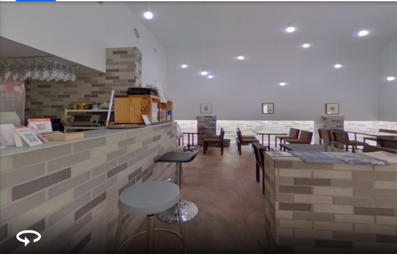
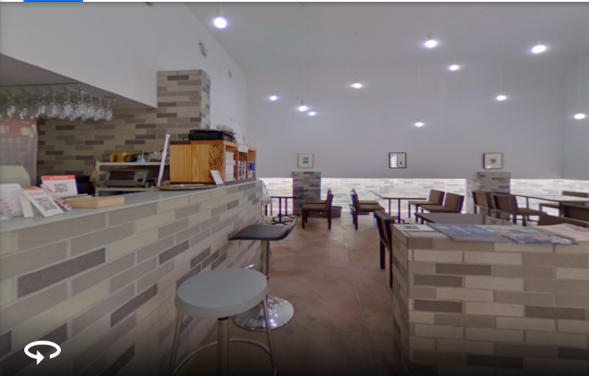
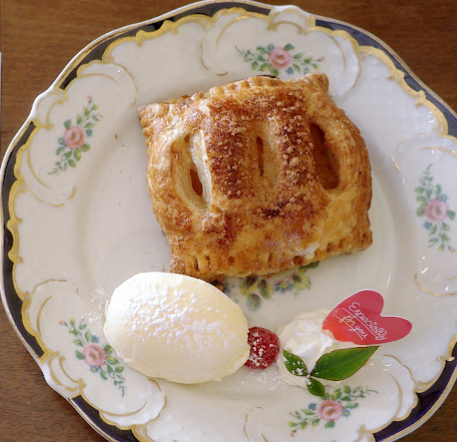
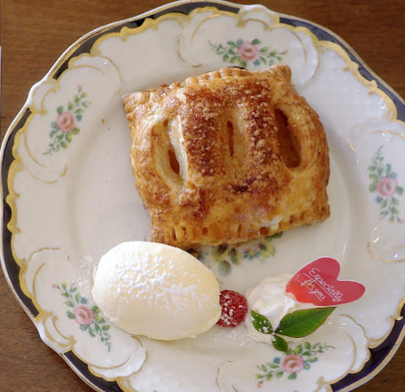
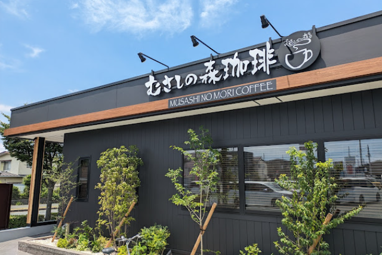
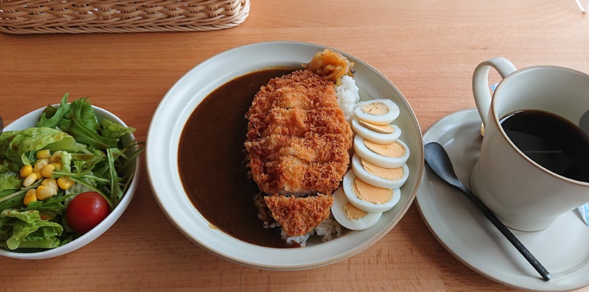

豊橋のモーニングできるカフェ５選
豊橋のモーニングできるカフェ 比較早見表
結果だけ知りたい方は表だけでOK！
豊橋のモーニングできるカフェの料金・メニュー・ゆっくりできるかについて5段階評価で比較しました。
詳細は以下をご参照ください！
| カフェ名 | 料金 | メニュー | ゆっくりできるか |
|---|---|---|---|
| ドルチェ | ★★★★★ | ★★★★★ | ★★★★★ |
| ノード | ★★★★★ | ★★★★★ | ★★★★★ |
| Cafe Accordiana | ★★★★★ | ★★★★★ | ★★★★☆ |
| むさしの森珈琲 | ★★★★★ | ★★★★★ | ★★★★★ |
| しまうま珈琲Jr | ★★★★★ | ★★★★★ | ★★★★★ |
豊橋のカフェ
１： ドルチェ
料金: 1000円前後
詳細
豊橋駅西口の通りを南に進んだところにあるカフェです。
モーニングはハムトースト、ホットケーキ、小倉トーストから選べます！
２： ノード

 

料金: 1000円前後
詳細
豊橋の水上ビル近くにあるおしゃれなカフェです。
モーニング、ランチともに1000円前後で楽しめます。
モーニングはトースト、パンケーキ、ワッフルセットから選ぶことができます！
３： Cafe Accordiana
 


料金: 1000円前後
詳細
豊橋の佐藤町にあるおしゃれなカフェです。
朝は９時から開店しています。
トーストやパン類のモーニングを楽しむことができます！
４： むさしの森珈琲



料金: 1000円前後
詳細
ガストのすかいらーくグループの系列店です。
内装はおしゃれで落ち着いた雰囲気です。
ファミレスに似たファミリータイプの席もあるので、ファミリーにもおすすめです。
モーニングは厚切りトーストに５種のトッピングを選ぶことができます！
５： しまうま珈琲Jr.

料金: 1000円前後
詳細
豊橋の幸公園近くにあるおしゃれなカフェです。
モーニングはトースト、パンケーキ、ワッフル、おにぎり＆味噌汁の中から選べます！
終わりに
以上、豊橋のモーニングできるおすすめのカフェを５つご紹介しました。
紹介しきれなかったカフェが豊橋にはまだまだあります！
ぜひ、皆さんもお気に入りのカフェを探してみましょう！